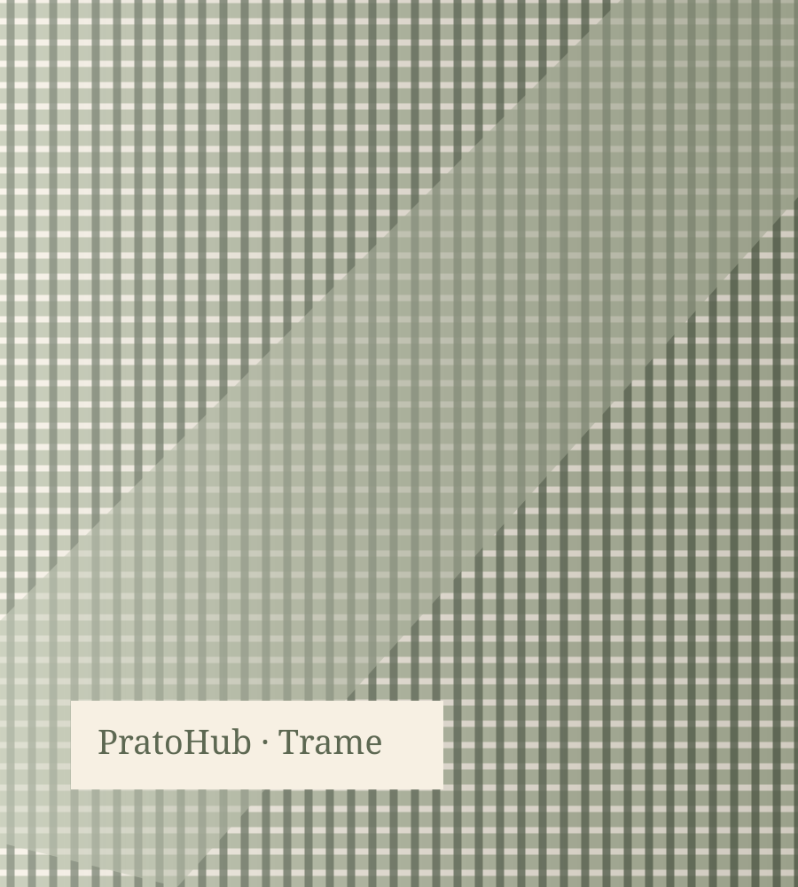
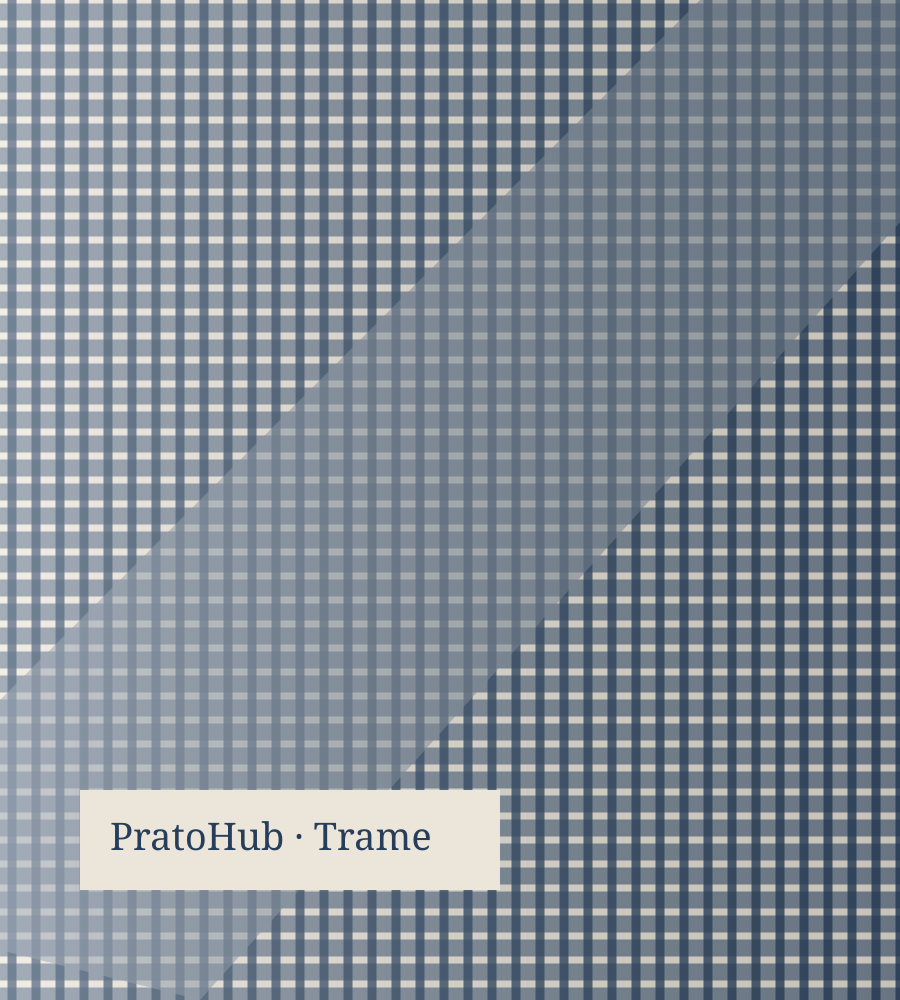

Where Fashion Meets Collective Intelligence
The definitive destination for fashion journalism, industry discussions and sustainable innovation.


Inside Prato's Quiet Race to Rebuild Wool, Thread by Thread
How a district built on regenerated fibre is rewriting its own playbook — and what its terzisti network can teach the rest of the industry about resilience without losing craft.
"Is regenerated wool actually scaling, or just marketing?"
A supply chain lead on traceability gaps in terzisti networks
"How do you audit a subcontractor for fibre origin?"
Today's Fashion Agenda
Editorial highlights selected by our team — across luxury, manufacturing, retail and the conversations shaping the day.
Market indicators — illustrative data, not live.
Synthetic dataset for demonstrating the interface. Values, variations and chart series are illustrative and must not be used for business decisions.
Energy and fibre costs remain the two variables every sourcing director in Prato is watching this quarter — together, they explain most of the margin pressure mills are reporting right now.
PratoHub Magazine — Market DeskLatest News
Reported and written by PratoHub Magazine editors. Demonstration content, not verified journalism.
Trending Discussions
Organised for clarity, not chaos. Every thread is searchable, citable, and built to last.
Questions from the Community
Ask the people who actually run the production floor, the pattern table, and the supply chain.
Events · DEMO calendar
Fashion weeks, trade shows and webinars — follow them and join the conversation before, during and after.